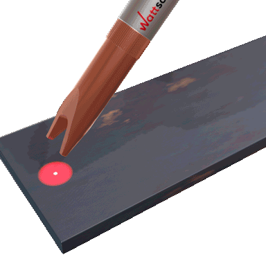

Small spot, high power. Suitable for penetrating welding.
The line width can be adjusted. This method is suitable for external
angle welding, butt welding and wire feed welding.
The diameter can be adjusted. The power density distribution is
uniform, the advantage is obvious when using high-frequency welding of thin sheets.
The diameter can be adjusted. The main function is to reduce the
hollow spot, make the spot larger and make the plate receive more uniform light radiation. This method
is suitable for all types of angle welding.

Adjustable width. By reducing the hollow spot, the energy of the
three sides can make the middle and the left and right sides of the plate completely heated. By adding
wire feed welding, the frequency can be reduced, and the welding site can be shaped like fish scales.
On the basis of the triangle, continue to increase the light spot, so
that the plate will heat up repeatedly. This method is suitable for welding large widths.